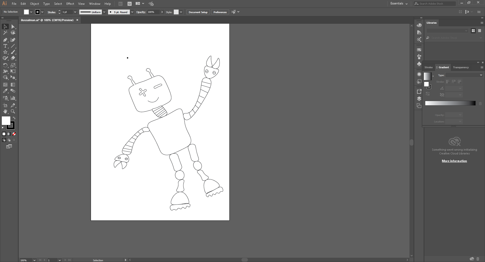

- Model (draw, render, animate, simulate, ...)
Difference between Raster and Vector image.

I just got the idea between raster and vector images by just looking at this picture, this explains everything

A Raster image is made up of individual pixels. Each pixel contains only one colour and is arranged in a certain fashion to make up the image. This is how normal pictures are displayed. The problem with raster image is that the maximum resolution is limited by the number of pixels.
That means, when you try and scale the image into a larger size, the quality drops and the edges of lines become fuzzy (staircase effect). This is the major limitation of using raster images.

vector image is composed of paths, which are represented by mathematical functions. These mathematical function represents the actual borders and the different elements in the image. Hence the maximum resolution of the image is not limited by the number of pixels. These mathematical functions can scale easily giving lossless ability to zoom to any extent on the image.
You can erase pixels in a raster image using the eraser tool but, that is not possible in a vector image. In a vector image you can only trim the path according to some constrains.(I got this great explanation from the internet)
2D design
- Raster— Gimp, Mypaint, Photoshop, Kirita.
- Vector— Inkscape, Adobe Illustrator.
3D Design
- Rhino,Fusion360,Onshape.
Raster
GIMP

GIMP is Free and Open Source Raster Graphic editor used for image retouching and editing ,i feel like it's open source verison of photoshop.
I just Designed my Logo (logo for Water level meter)

Here you can Download the logo GIMP Design File
i just recorded a video that show's how i made this logo
My paint

Mypaint is a free and Open-source raster graphics editor for digital painters with focus on painting rather than painting image manipulation or post procrssing .
I just Draw a sketch

Here you can Download the MyPaint Sketch Design File
Krita

Krita is a free and open-source raster graphics editor designed primarily for digital painting animation purpose.
I just did a small animation
Dancing
Here you can Download the Krita Animation Design File
I also created a video that shows how i made this animation.
Photoshop

Photoshop is a raster graphics editor developed and published by Adobe Systems. It's a Proprietary software .
I completed Water level indicator block diagram using Photoshop(it's my old project idea).

Here you can Download the Diagram Photoshop Design File
Conclusion
GIMP and Photoshop are like the same main differnce is that GIMP is under free and Opensource but Phtoshop is Proprietary. Krita is one of the awsome tool for Drawing and Render Animation.
You can download the original Photoshop file Here

I used Wacom tab with mypaint,kita and it's worked perfectly fine
Vector
Inkscape

Inkscape is a free and opensource vector graphics editor.
For Laser engraving we must need a vector image , there is a way to convert normall .png,.jpg to Vector by using Trace Bitmap so i just did my favorite jpg image to laser engraving ready vector image

i used Inkscape Tracebitmap tool to create vector image.
Illustrator

Adobe Illustrator is a vector graphics editor developed and marketed by Adobe Systems.
I draw a robot using Illustrator.i used pentool to draw this Completely
Here you can Download the Illustrator Design File
3D Design
Rhinoceros
Rihnoceros is a computer graphics and computer-aided design application software.
I don't have any experinece in 3d design.so i just started with rihno
First i just design a 3d printed case

i just try to make a 3d design of this 3d printed case.
this is what is designed
Here you can Download Rhino 3D File
Resource
Here you can Download the all the Design File's